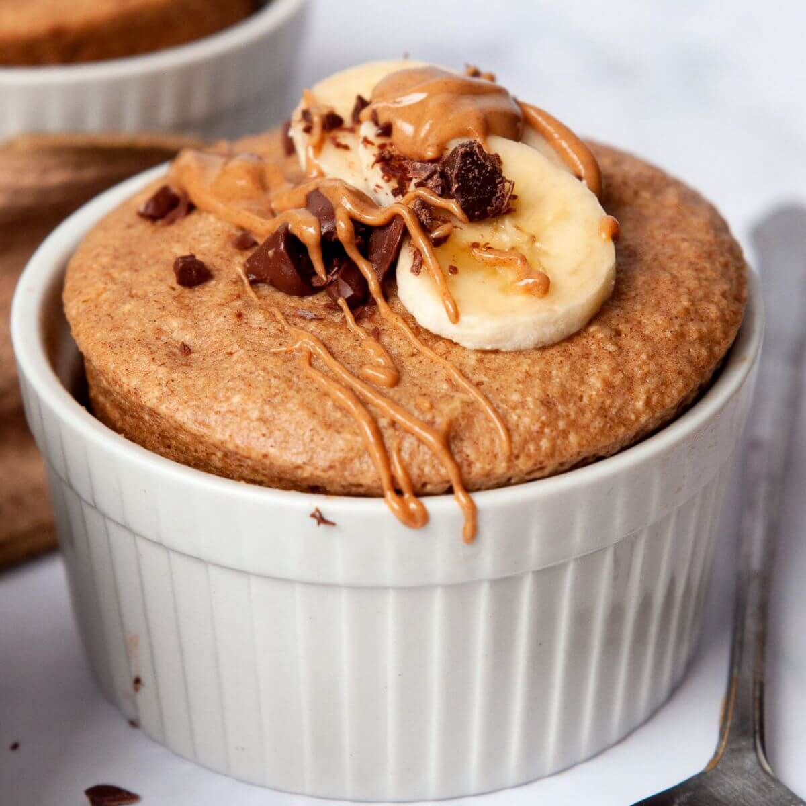

Baked Oats

Description
Baked Oats is a viral TikTok recipe that's getting popular because it's an easy, versatile & healthy breakfast with a cake taste and texture!
And it’s all done in a blender for a fine and airy texture!
Ingredients
- Rolled oats
- Egg
- Banana
- Maple syrup
- Baking powder
- Salt
- Cocoa powder
Steps
- Place all the ingredients together in a blender.
- Blend until the mixture is evenly mixed and pourable. You may have to scoop some out though.
- Transfer to a greased ramekin, oven-safe pan or bowl. You can add some toppings like shaved white chocolate, if you’d like.
- Bake until the edges pull away and a toothpick inserted in the middle comes out clean.
- Enjoy!